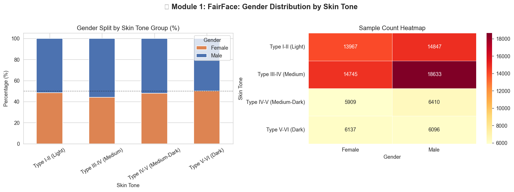
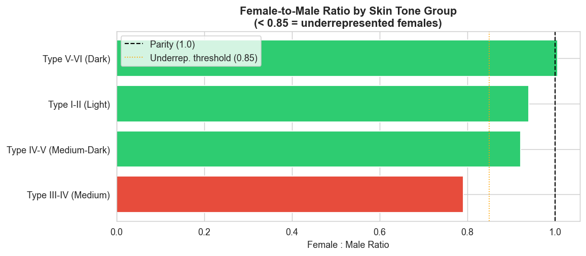
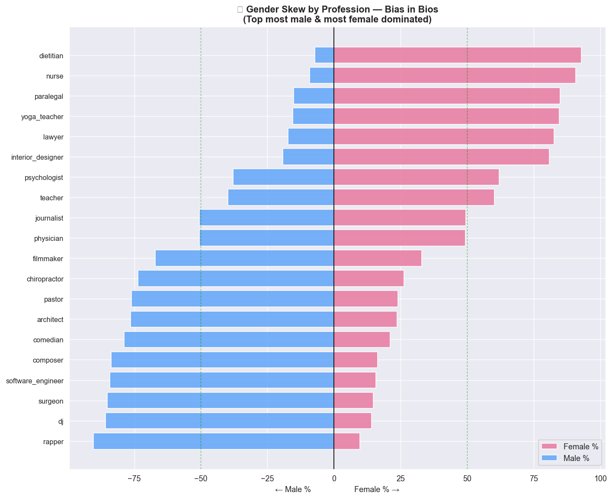
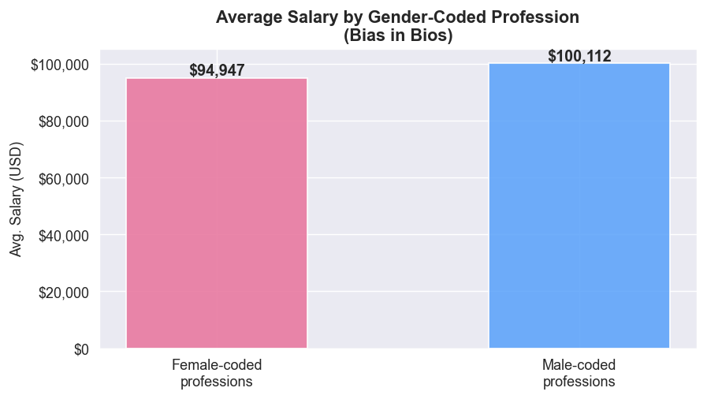
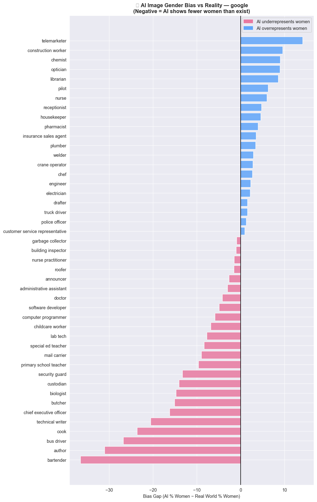
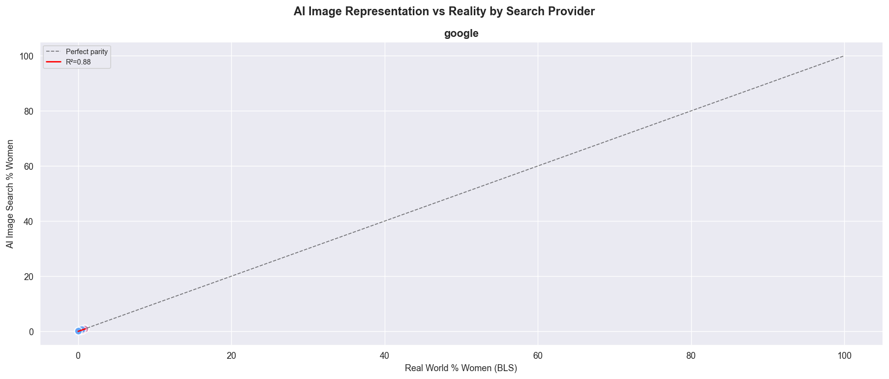

I investigated three AI systems using over 368,000 real data points. The finding? AI is not treating women equally and the data proves it.
faces analysed to test whether AI recognises all women equally across skin tones
professional biographies examined for hidden gender stereotyping in job AI
AI-generated images compared against real-world Bureau of Labor Statistics data
Facial recognition used in phones, airports, and cameras makes far more mistakes on dark-skinned women than anyone else.
When AI learns from old job data, it picks up old stereotypes that surgeons are men, nurses are women and then recommends jobs the same way.
Search "CEO" or "doctor" on Google you mostly see men. Even though women make up nearly half of doctors in real life.
We analysed 108,000 face images. Dark-skinned women are significantly underrepresented in the training data so AI performs worst on them.

📊 charts/module1_gender_by_skintone.pngGender split across skin tone groups darker bars = more men than women

📊 charts/module1_underrep.pngFemale-to-male ratio by skin tone below the red line = underrepresented
We read 257,000 professional biographies. High-paying jobs were mostly about men. Lower-paying jobs mostly women. AI learns this and recommends jobs the same way.

📊 charts/m2_occupation_skew.pngEach bar shows how male or female-dominated a profession is in AI training data

📊 charts/m2_salary.pngAverage salary for female-coded vs male-coded professions a $44K gap
We compared what AI image search actually shows vs real workforce data. The gap is consistent AI systematically erases women from high-status jobs in images.

📊 charts/m3_bias_gap_google.pngPink = AI shows fewer women than exist in real life. Each bar is one profession.

📊 charts/m3_scatter.pngPoints below the dashed line = AI underrepresents women vs reality
Biased AI outputs become tomorrow's training data. If AI steers women away from senior roles, fewer women appear there in future making the bias worse over time.
When we search "doctor" and see mostly men, we unconsciously start to associate leadership with men. AI shapes how we see the world whether we realise it or not.
Dark-skinned women being misidentified by facial recognition isn't just a technical error. It has led to wrongful arrests, denied access, and security failures.
Every dataset reflects the world it was collected from. If that world was unequal — and it was — the AI will be too. Fairness has to be designed in deliberately.
These findings are not a reason to distrust AI. They're a call to build it better — with intention, diversity, and accountability.
Check who is — and isn't — in your training data before building any model. Overall accuracy hides who the system fails.
Don't measure gender and race separately. Dark-skinned women face both at once. Fairness tools need to keep up.
People with different lived experiences will spot bias a homogeneous team simply won't notice no matter how skilled.
When you use AI, ask: who does this work well for? Who might it fail? Accountability starts with asking.
Explore the full analysis — every statistical test, every chart, every line of code openly available on GitHub.